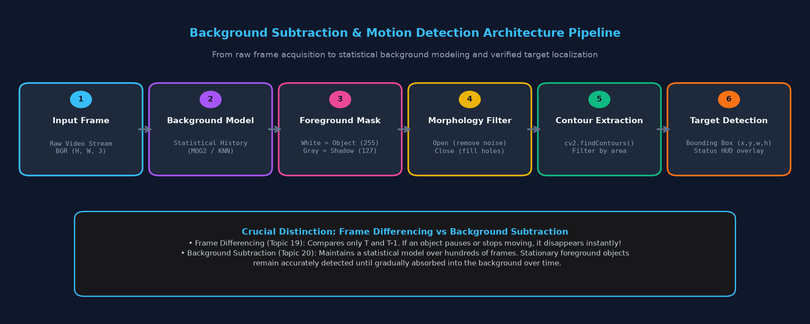
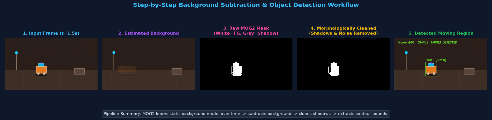
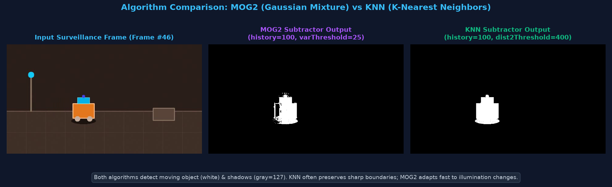
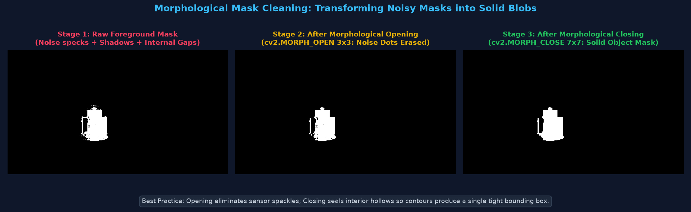
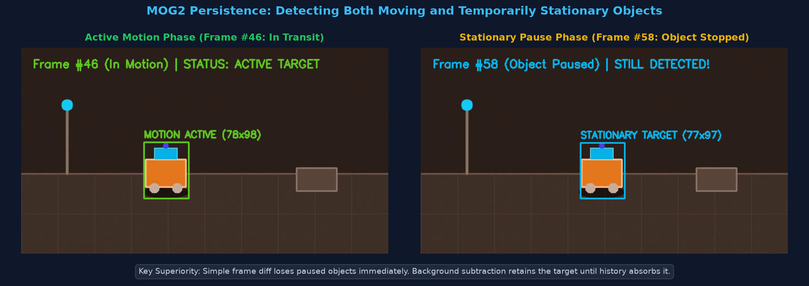
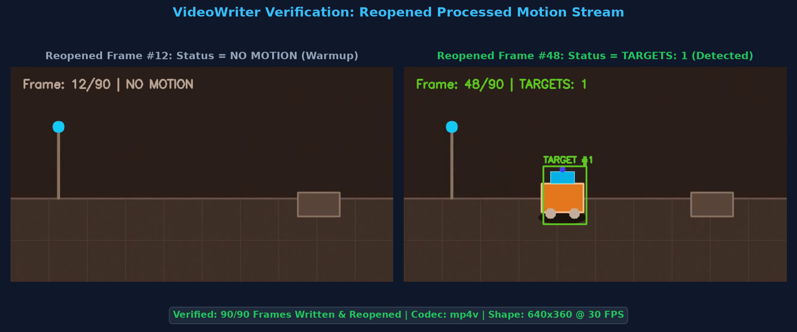

Statistical Background Modeling (MOG2 & KNN), Foreground Mask Extraction, Shadow Filtering & Surveillance Analytics
Real-world surveillance aur automated computer vision systems fixed cameras (CCTV) se continuous streams analyze karte hain. In scenes mein mostly do components hote hain:
Background Subtraction ek computational technique hai jo har incoming frame mein se estimated static background ko mathematically subtract karke dynamic Foreground Mask isolate karti hai.

Background subtraction mein frequently use hone wale core OpenCV concepts aur methods ka quick reference:
| Concept / Method | Type | Beginner Explanation & Meaning |
|---|---|---|
| Background Model | Concept | Camera view ke stationary scene ka mathematical/statistical representation (e.g. mean aur variance per pixel). |
| Foreground Mask | Data Array | Output 2D image jisme 255 (White) = Foreground Object, 0 (Black) = Background, aur 127 (Gray) = Shadow. |
| Shadow Detection | Feature | Moving objects ki cast shadows ko alag gray color (pixel value 127) mark karna taaki false bounding boxes na banein. |
| Learning Rate | Parameter | Model kitni fast nayi information seekhta hai. -1 = auto (1/history), 0 = model freezes, 1 = instant update. |
cv2.createBackgroundSubtractorMOG2() |
OpenCV Method | Mixture of Gaussians 2 algorithm ka subtractor instance banata hai (fast illumination adaptation). |
cv2.createBackgroundSubtractorKNN() |
OpenCV Method | K-Nearest Neighbors algorithm ka subtractor instance banata hai (sharp boundaries on complex backgrounds). |
subtractor.apply(frame) |
OpenCV Method | Next frame ko background model se compare karke foreground mask return karta hai aur model update karta hai. |
getBackgroundImage() |
OpenCV Method | Current estimated static background image reconstruct karke return karta hai (visualization ke liye useful). |
cv2.morphologyEx() |
OpenCV Method | Opening (noise dots hatane) aur Closing (holes seal karne) ke liye morphological transformation lagata hai. |
cv2.findContours() |
OpenCV Method | Cleaned binary mask ke white foreground blobs ke boundary coordinates nikalta hai. |
cv2.boundingRect() |
OpenCV Method | Contour ke around upright bounding rectangle (x, y, w, h) calculate karta hai. |
Background Subtraction ek progressive adaptive cycle follow karta hai jisme har naye frame ke saath model refine hota hai:

ret, frame = cap.read() se video ka current frame grab karein.OpenCV do state-of-the-art background subtraction algorithms provide karta hai: MOG2 aur KNN.

| Feature / Property | MOG2 (Mixture of Gaussians 2) | KNN (K-Nearest Neighbors) |
|---|---|---|
| Underlying Approach | Har pixel ko 3 se 5 Gaussian distributions ka mixture model karta hai. | Non-parametric K-Nearest Neighbors sample-based density estimation. |
| Primary Sensitivity Tuning | varThreshold (Default: 16–25). Lower = more sensitive. |
dist2Threshold (Default: 400.0). Lower = stricter matching. |
| Shadow Detection | detectShadows=True (Marks shadows as gray = 127). |
detectShadows=True (Also marks shadows as gray = 127). |
| Strengths | Illumination changes (sunlight, shadows, lamp flickers) par fast adapt hota hai; fast execution speed. | Complex scene geometry aur repetitive background motion par aksar sharper boundaries retain karta hai. |
| Ideal Use Cases | Outdoor traffic surveillance, outdoor CCTV cameras, fast illumination changes. | Indoor tracking, crowded scenes, cluttered factory floors. |
MOG2 subtractor initialize karke video stream par mask generate karne ka baseline runnable code:
import cv2
# 1. Open sample video
cap = cv2.VideoCapture("surveillance_sample.mp4")
if not cap.isOpened():
print("Error: Could not open video file!")
exit()
# 2. Initialize MOG2 Subtractor
# history: number of previous frames affecting the background model (default 500)
# varThreshold: Mahalanobis distance threshold for foreground classification
# detectShadows: True marks shadows as gray (127), keeping mask cleaner
subtractor = cv2.createBackgroundSubtractorMOG2(history=300, varThreshold=25, detectShadows=True)
frame_idx = 0
while cap.isOpened():
ret, frame = cap.read()
if not ret:
break
frame_idx += 1
# 3. Apply subtractor to current frame
fg_mask = subtractor.apply(frame)
# 4. Display input and mask
cv2.imshow("Surveillance Feed", frame)
cv2.imshow("MOG2 Foreground Mask", fg_mask)
if cv2.waitKey(25) & 0xFF == ord('q'):
break
cap.release()
cv2.destroyAllWindows()
Dono algorithms ko identical frames feed karke visual masks compare karein:
import cv2
import numpy as np
cap = cv2.VideoCapture("surveillance_sample.mp4")
# Initialize both subtractors with matching history
mog2 = cv2.createBackgroundSubtractorMOG2(history=300, varThreshold=25, detectShadows=True)
knn = cv2.createBackgroundSubtractorKNN(history=300, dist2Threshold=400.0, detectShadows=True)
while cap.isOpened():
ret, frame = cap.read()
if not ret:
break
mask_mog2 = mog2.apply(frame)
mask_knn = knn.apply(frame)
# Stack both masks side by side for direct comparison
combined_masks = np.hstack((mask_mog2, mask_knn))
cv2.imshow("MOG2 (Left) vs KNN (Right)", combined_masks)
if cv2.waitKey(25) & 0xFF == ord('q'):
break
cap.release()
cv2.destroyAllWindows()
Raw mask mein sensor noise aur gray shadows hote hain. Morphological Opening aur Closing se mask ko solid blob mein convert kiya jata hai:

import cv2
cap = cv2.VideoCapture("surveillance_sample.mp4")
mog2 = cv2.createBackgroundSubtractorMOG2(history=300, varThreshold=25, detectShadows=True)
# Define rectangular morphological kernels
kernel_open = cv2.getStructuringElement(cv2.MORPH_RECT, (3, 3))
kernel_close = cv2.getStructuringElement(cv2.MORPH_RECT, (7, 7))
while cap.isOpened():
ret, frame = cap.read()
if not ret:
break
raw_mask = mog2.apply(frame)
# 1. Eliminate shadows (value 127): Keep only genuine foreground (value 255)
_, binary_fg = cv2.threshold(raw_mask, 200, 255, cv2.THRESH_BINARY)
# 2. Opening: Erode then Dilate (erases isolated tiny noise dots)
opened_mask = cv2.morphologyEx(binary_fg, cv2.MORPH_OPEN, kernel_open)
# 3. Closing: Dilate then Erode (fills interior holes & bridges fractures)
cleaned_mask = cv2.morphologyEx(opened_mask, cv2.MORPH_CLOSE, kernel_close)
cv2.imshow("Raw Mask", raw_mask)
cv2.imshow("Cleaned Solid Mask", cleaned_mask)
if cv2.waitKey(25) & 0xFF == ord('q'):
break
cap.release()
cv2.destroyAllWindows()
Cleaned mask se contours extract karke moving targets ke around bounding rectangle draw karein:

import cv2
cap = cv2.VideoCapture("surveillance_sample.mp4")
mog2 = cv2.createBackgroundSubtractorMOG2(history=300, varThreshold=25, detectShadows=True)
kernel_open = cv2.getStructuringElement(cv2.MORPH_RECT, (3, 3))
kernel_close = cv2.getStructuringElement(cv2.MORPH_RECT, (7, 7))
while cap.isOpened():
ret, frame = cap.read()
if not ret:
break
raw_mask = mog2.apply(frame)
_, binary_fg = cv2.threshold(raw_mask, 200, 255, cv2.THRESH_BINARY)
clean_mask = cv2.morphologyEx(binary_fg, cv2.MORPH_OPEN, kernel_open)
clean_mask = cv2.morphologyEx(clean_mask, cv2.MORPH_CLOSE, kernel_close)
# Find external contours of moving objects
contours, _ = cv2.findContours(clean_mask, cv2.RETR_EXTERNAL, cv2.CHAIN_APPROX_SIMPLE)
annotated = frame.copy()
for cnt in contours:
# Area filter eliminates tiny residual noise blobs
if cv2.contourArea(cnt) > 400:
x, y, w, h = cv2.boundingRect(cnt)
# Draw green bounding rectangle around detected target
cv2.rectangle(annotated, (x, y), (x + w, y + h), (0, 255, 0), 2)
cv2.putText(annotated, f"TARGET ({w}x{h})", (x, y - 8),
cv2.FONT_HERSHEY_SIMPLEX, 0.55, (0, 255, 0), 2)
cv2.imshow("Detected Moving Regions", annotated)
if cv2.waitKey(25) & 0xFF == ord('q'):
break
cap.release()
cv2.destroyAllWindows()
Poore pipeline ko combine karke target counter aur status HUD ke saath processed video disk par save karein:

import cv2
import time
# 1. Open video and extract properties
cap = cv2.VideoCapture("surveillance_sample.mp4")
width = int(cap.get(cv2.CAP_PROP_FRAME_WIDTH))
height = int(cap.get(cv2.CAP_PROP_FRAME_HEIGHT))
fps = cap.get(cv2.CAP_PROP_FPS)
# 2. Configure VideoWriter to save processed stream
fourcc = cv2.VideoWriter_fourcc(*'mp4v')
output_path = "surveillance_motion_output.mp4"
out = cv2.VideoWriter(output_path, fourcc, fps, (width, height))
# 3. Initialize background subtractor and morphological filters
mog2 = cv2.createBackgroundSubtractorMOG2(history=300, varThreshold=25, detectShadows=True)
k_open = cv2.getStructuringElement(cv2.MORPH_RECT, (3, 3))
k_close = cv2.getStructuringElement(cv2.MORPH_RECT, (7, 7))
frames_processed = 0
start_time = time.perf_counter()
while cap.isOpened():
ret, frame = cap.read()
if not ret:
break
frames_processed += 1
# Apply MOG2 subtraction
raw_mask = mog2.apply(frame)
# Filter shadows & clean noise
_, binary_fg = cv2.threshold(raw_mask, 200, 255, cv2.THRESH_BINARY)
clean_mask = cv2.morphologyEx(binary_fg, cv2.MORPH_OPEN, k_open)
clean_mask = cv2.morphologyEx(clean_mask, cv2.MORPH_CLOSE, k_close)
# Extract contours
contours, _ = cv2.findContours(clean_mask, cv2.RETR_EXTERNAL, cv2.CHAIN_APPROX_SIMPLE)
annotated = frame.copy()
targets_detected = 0
for cnt in contours:
if cv2.contourArea(cnt) > 400:
targets_detected += 1
x, y, w, h = cv2.boundingRect(cnt)
cv2.rectangle(annotated, (x, y), (x + w, y + h), (34, 197, 94), 2)
cv2.putText(annotated, f"TARGET #{targets_detected}", (x, y - 6),
cv2.FONT_HERSHEY_SIMPLEX, 0.5, (34, 197, 94), 2)
# Real-time HUD status
status_text = f"MOTION DETECTED ({targets_detected} Target)" if targets_detected > 0 else "SURVEILLANCE: SECURE"
status_col = (34, 197, 94) if targets_detected > 0 else (148, 163, 184)
cv2.putText(annotated, f"Frame: #{frames_processed:02d} | {status_text}", (20, 35),
cv2.FONT_HERSHEY_SIMPLEX, 0.65, status_col, 2)
out.write(annotated)
elapsed = time.perf_counter() - start_time
cap.release()
out.release()
print(f"Processed {frames_processed} frames in {elapsed:.3f}s ({frames_processed/elapsed:.1f} FPS)")
# Verify reopened video
check_cap = cv2.VideoCapture(output_path)
print(f"Verification: {int(check_cap.get(cv2.CAP_PROP_FRAME_COUNT))} frames confirmed on disk.")
check_cap.release()
Background Subtraction modern video analytics systems mein wide range of real-world use cases solve karta hai:
Connection: Industrial plants aur restricted zones mein 24x7 static cameras background subtraction se perimeter breach detect karte hain aur human entry par automated alarm bajate hain.
Connection: Fixed traffic cameras road lane par moving vehicles ko isolate karte hain, vehicle density calculate karte hain, aur traffic signal timing dynamically adjust karte hain.
Connection: Shopping malls aur stores mein overhead cameras floor par customers ka movement track karte hain, popular product aisles par heatmaps banate hain, aur queue length monitor karte hain.
Connection: Heavy robotic machinery ke danger zones mein human entry detect hoti hi conveyor system ko emergency stop signal bhej diya jata hai.
| Symptom / Bug | Root Cause | Recommended Solution |
|---|---|---|
| Initial frames are completely white / noisy | Subtractor warmup phase; model lacks sufficient history. | Allow 10–20 frames for the background model to settle before triggering alerts. |
| Moving shadows create false large boxes | detectShadows is False, or shadow gray values (127) are not thresholded out. |
Ensure detectShadows=True and threshold mask with cv2.threshold(mask, 200, 255, cv2.THRESH_BINARY). |
| Stationary object disappears from mask | Model has absorbed the stationary object over time. | Increase history (e.g. 500–1000) or pass a very small learningRate (e.g. 0.001) in apply(). |
| Small sensor noise specks trigger boxes | Contour area threshold is missing or set too low. | Apply morphological opening and ignore contours with cv2.contourArea(cnt) < 400. |
| Camera shake causes whole frame motion | Wind or vibrations displace background pixels. | Use rigid camera mounts or apply digital video stabilization prior to subtraction. |
| Headless Environment Crash | cv2.imshow() called on cloud servers without GUI. |
Skip imshow() in headless environments; direct output to VideoWriter or save image frames. |
detectShadows=True, OpenCV marks shadows as gray (127), allowing clean binary filtering.| Technique | Approach | Handles Stopped Objects? | Recognizes Object Class? | Compute Cost |
|---|---|---|---|---|
| Frame Differencing (Topic 19) | Subtract Frame T - (T-1) | No (Object disappears instantly) | No | Ultra Low |
| Background Subtraction (Topic 20) | Statistical History Model | Yes (Retains until absorbed) | No | Low to Moderate |
| Deep Learning (YOLO / SSD) | Pretrained Neural Network | Yes (Always detected) | Yes (Person, Car, Dog, etc.) | High (GPU recommended) |
Answer: OpenCV moving object ke floor par padne wali shadows ko identify karke pixel value 127 (gray) assign karta hai. Agar hum direct contours nikalenge toh shadow bhi box mein include ho jayegi. Isliye hum _, thresh = cv2.threshold(mask, 200, 255, cv2.THRESH_BINARY) lagate hain, jisse gray shadows (127) black (0) ban jati hain aur sirf genuine object (255) bachta hai.
Answer: Shuru mein person foreground (white) detect hoga. Lekin jaise-jaise frames aage badhenge, MOG2 ka Gaussian distribution update hota rahega. history frames (e.g. 300 to 500 frames) ke baad woh stationary person background model ka part ban jayega aur mask se disappear ho jayega (absorption). Agar aap absorption delay karna chahte hain, toh history badhayein ya learningRate reduce karein.
Answer: Frame differencing sirf do frames ka difference leti hai, isliye agar moving target temporary stop ho jaye (jaise traffic signal par car ruk jaye), toh difference 0 ho jata hai aur tracking fail ho jati hai. Background subtraction scene ki long-term statistical memory rakhta hai, isliye stopped object bhi accurate bounding box ke saath track hota rehta hai.